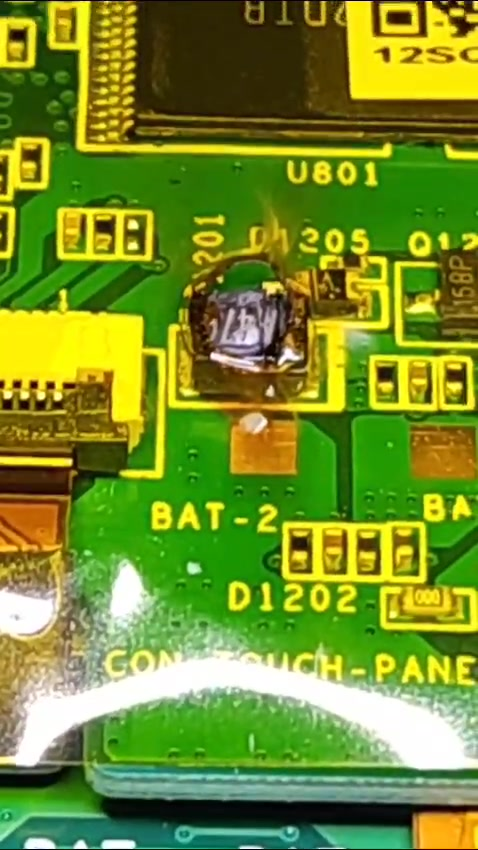
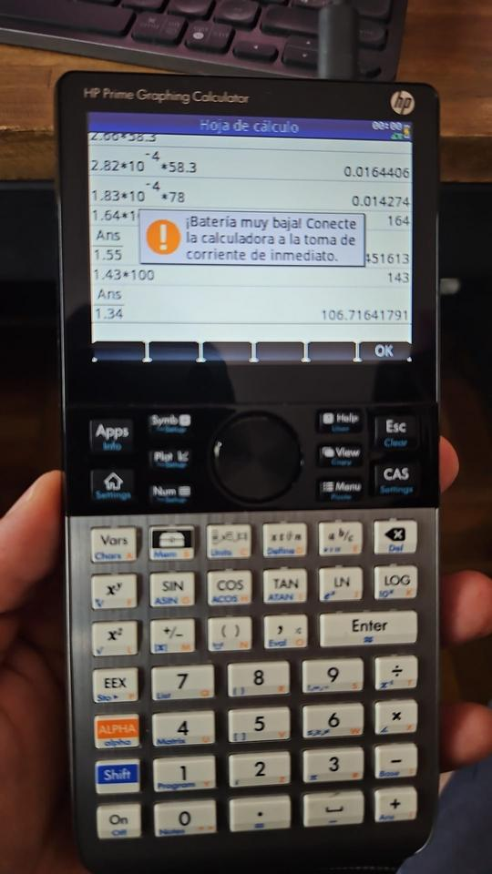

Mi esposa estaba necesitando una calculadora científica y eligió una HP Prime G2.
Obviamente el post no es para decir "que buena calculadora".
En la segunda carga que se realizó dejó de prender.
Por suerte mi hermano pudo revisarla y esto es lo que encontró:

Buscando en internet no fuí el primero con el problema. Un ejemplo de ello es el post HP Prime G2 can die if you turn it off while charging.
Lamentable que un equipo nuevo, de gama alta, tenga un error tan grueso.
Lamentable también que al momento de elegir una calculadora científica de alta gama, las opciones que se encuentran (a principios de 2025) son:
Si agregamos las Casio no estamos mejor:
- Casio fx-CG500 (esta se parece más a un celular, pantalla grande y teclado minúsculo)
- Casio fx-CG50
El precio similar a un celular android de gama baja, pero las prestaciones MUY inferiores a uno.
Postdata
Para los que gustan de historias con final feliz, la calculadora ya está andando.
Nuevamente, ¡gracias Emmanuel!
